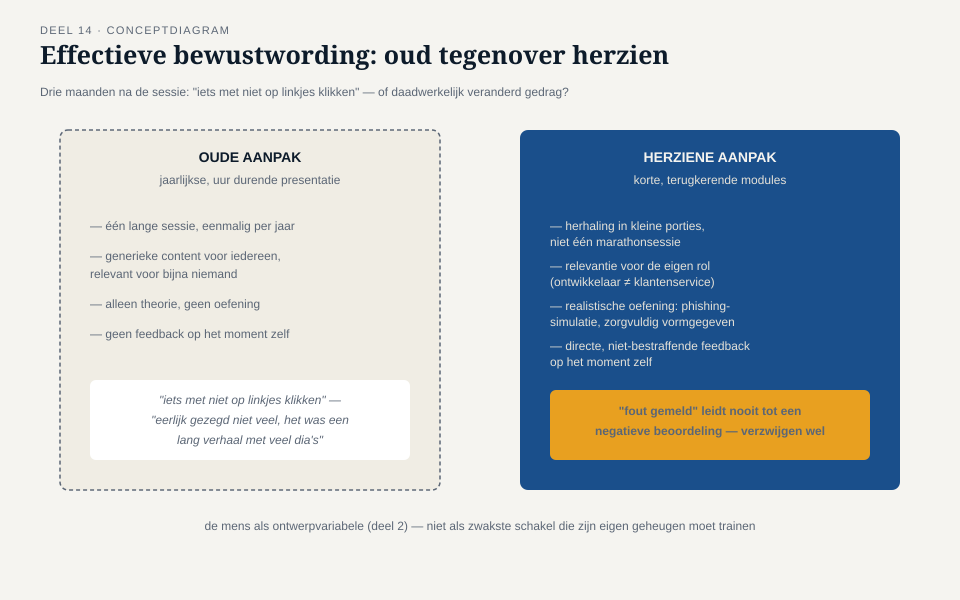
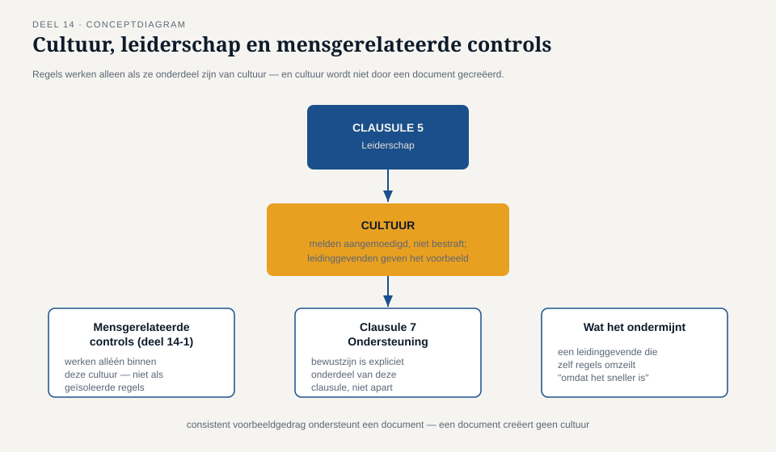

Deel 14 — Annex A I: organisatorische en mensgerelateerde controls
Reader · Ductus-cursus Informatiebeveiliging en privacy · niveau 2 (professional) · deel 14 van 22
Casusvervolg: de bewustwordingstraining die niemand onthield
Het Mutatieplatform-team heeft, zoals veel organisaties, ooit een verplichte jaarlijkse bewustwordingstraining ingevoerd: een uur durende presentatie over phishing, wachtwoorden en "meld het als je iets vreemds ziet". Merel vraagt een aantal teamleden, drie maanden na de laatste sessie, wat hen is bijgebleven. De antwoorden variëren van "iets met niet op linkjes klikken" tot een oprecht "eerlijk gezegd niet veel — het was een lang verhaal met veel dia's."
Dit is geen verwijt aan de deelnemers. Het is een illustratie van precies het principe uit deel 2: de mens als ontwerpvariabele, niet als zwakste schakel. Een eenmalige, algemene presentatie is zelf slecht ontworpen bewustwording — het legt de verantwoordelijkheid voor onthouden bij het individuele geheugen, in plaats van het gedrag structureel te ondersteunen. Dit deel behandelt hoe de organisatorische en mensgerelateerde controls van Bijlage A dit wél goed kunnen doen — en waarom deze twee categorieën, ondanks hun beperkte aantal controls (37 organisatorisch, 8 mensgerelateerd), vaak het grootste praktische verschil maken.
1. Waarom deze twee categorieën samen worden behandeld
Bijlage A deelt de 93 controls in vier thema's (deel 11): organisatorisch, mensgerelateerd, fysiek en technologisch. Dit deel behandelt de eerste twee samen, omdat ze een gemeenschappelijke eigenschap delen: waar fysieke en technologische controls (deel 15) vooral over systemen gaan, gaan organisatorische en mensgerelateerde controls over hoe mensen binnen de organisatie zich gedragen en georganiseerd zijn — het domein waar de "ontwerpvariabele mens" uit deel 2 het meest direct wordt vormgegeven.
2. Organisatorische controls: het bredere kader
De 37 organisatorische controls omvatten onderwerpen als beleid (deel 13), rollen en verantwoordelijkheden (deel 4), leveranciersrelaties (verder uitgewerkt in deel 18), en incidentmanagement op procesniveau (deel 19). Drie organisatorische controls verdienen op dit niveau specifieke aandacht omdat ze rechtstreeks aansluiten bij de mensgerelateerde controls die in de rest van dit deel centraal staan:
- Toewijzing van beveiligingsrollen en -verantwoordelijkheden — niet alleen wíe verantwoordelijk is (deel 4), maar dat dit voor iedereen in de organisatie duidelijk en vindbaar is, niet alleen voor de securityfunctie zelf.
- Contact met belangengroepen en autoriteiten — een vastgelegd proces voor contact met bijvoorbeeld het NCSC of relevante brancheorganisaties, zodat dit niet ad hoc hoeft te worden uitgezocht op het moment dat het nodig is (bijvoorbeeld tijdens een incident, deel 19).
- Dreigingsinformatie — een gestructureerde manier om relevante externe dreigingsinformatie te verzamelen en te beoordelen, in plaats van toevallig mee te krijgen wat er in de media verschijnt.
3. Mensgerelateerde controls door de levenscyclus van een medewerker
De acht mensgerelateerde controls volgen, niet toevallig, dezelfde structuur als het joiner-mover-leaver-model uit deel 5 — nu toegepast op gedrag en cultuur in plaats van op systeemtoegang:
Vóór indiensttreding: screening. Afhankelijk van de gevoeligheid van de functie kan een organisatie besluiten tot achtergrondcontroles, binnen de grenzen van wat wettelijk is toegestaan en proportioneel is voor de functie. Voor een rol met toegang tot bijzondere persoonsgegevens (zoals bij Meridiaan gebruikelijk) is een zorgvuldiger screening gerechtvaardigd dan voor een rol zonder zulke toegang — screening is dus geen uniforme, organisatiebrede regel, maar risicogebaseerd, net als de rest van dit ISMS.
Bij indiensttreding: arbeidsvoorwaarden en verantwoordelijkheden. Contractuele bepalingen over vertrouwelijkheid, acceptabel gebruik van systemen, en de verwachtingen rond beveiliging horen bij aanvang expliciet te worden vastgelegd — niet als vage clausule, maar als iets waar bij aanvang concreet bij wordt stilgestaan, gekoppeld aan de joiner-fase uit deel 5.
Tijdens het dienstverband: bewustwording, opleiding en training. Dit is het onderdeel waar de openingscasus van dit deel op ingaat. Effectieve bewustwording is geen eenmalige jaarlijkse sessie, maar een doorlopend proces met een aantal kenmerken die uit gedragswetenschappelijk onderzoek en praktijkervaring naar voren komen:
- Herhaling in kleine porties in plaats van één lange sessie — korte, terugkerende momenten beklijven beter dan een jaarlijkse marathonpresentatie.
- Relevantie voor de eigen rol — een ontwikkelaar heeft andere aandachtspunten dan een medewerker van de klantenservice; generieke content voor iedereen verliest relevantie voor bijna iedereen.
- Realistische oefening in plaats van alleen theorie — een gecontroleerde, interne phishingsimulatie (mits zorgvuldig en niet vernederend vormgegeven) leert meer dan een dia over "hoe je phishing herkent". Let op: dit raakt ook privacy (deel 7, paragraaf logging) — een simulatie die individuele medewerkers negatief beoordeelt en registreert, vraagt om zorgvuldige, proportionele vormgeving.
- Directe feedback op het moment zelf — iemand die op een phishingsimulatie klikt, leert meer van een onmiddellijke, niet-bestraffende uitleg op dat moment dan van een jaarlijkse samenvatting achteraf.
Disciplinaire processen. Wanneer bewustwording en cultuur tekortschieten en er sprake is van een daadwerkelijke overtreding — bijvoorbeeld het bewust omzeilen van een beveiligingsmaatregel — moet er een formeel, eerlijk en proportioneel proces zijn om daarmee om te gaan. Dit proces dient zorgvuldig onderscheid te maken tussen een oprechte fout (die vraagt om leren, niet straffen — vergelijk het onbedoelde-verstuurde-bestand-voorbeeld uit deel 1 en 2) en een bewuste, kwaadwillende overtreding.
Bij uitdiensttreding: verantwoordelijkheden na beëindiging. De leaver-fase uit deel 5, nu aangevuld met de mensgerelateerde kant: welke vertrouwelijkheidsverplichtingen blijven gelden na vertrek, en is dat bij vertrek expliciet onder de aandacht gebracht, niet alleen impliciet verondersteld vanuit het oorspronkelijke contract.
4. Cultuur als beheersmaatregel
De rode draad door dit deel is dat mensgerelateerde controls niet werken als geïsoleerde regels, maar alleen als ze onderdeel zijn van een bredere cultuur: een omgeving waarin melden van een fout (zoals de verkeerd verstuurde bijlage uit deel 1) wordt aangemoedigd in plaats van bestraft, waarin bewustwording aansluit bij het dagelijkse werk in plaats van een jaarlijkse verplichting te zijn, en waarin leidinggevenden het goede voorbeeld geven — een leidinggevende die zelf beveiligingsregels omzeilt "omdat het sneller is", ondermijnt elke trainingssessie die daarna nog wordt gegeven.
Dit is precies waarom Bijlage A deze controls niet als losse checklist behandelt, maar waarom clausule 5 (leiderschap) en clausule 7 (ondersteuning, waaronder bewustzijn) uit deel 11 expliciet vereisen dat het bestuur zichtbaar betrokken is: cultuur wordt niet gecreëerd door een document, maar door consistent voorbeeldgedrag dat een document ondersteunt.
5. Merels herontwerp
Met dit kader herontwerpt Merel de jaarlijkse bewustwordingstraining: van één lange sessie naar korte, terugkerende modules per functiegroep (ontwikkelaars krijgen andere content dan de klantenservice), aangevuld met een halfjaarlijkse, laagdrempelige phishingsimulatie met directe, niet-bestraffende feedback op het moment van een klik, en een expliciete afspraak met het management dat "ik heb een fout gemaakt en dit gemeld" nooit tot een negatieve beoordeling leidt — alleen het bewust verzwijgen van een fout doet dat wel. Deze herziening kost meer doorlopende inspanning dan de oude jaarlijkse sessie, maar sluit direct aan bij wat drie maanden later daadwerkelijk nog wordt onthouden — en, belangrijker, wat daadwerkelijk gedrag verandert.


